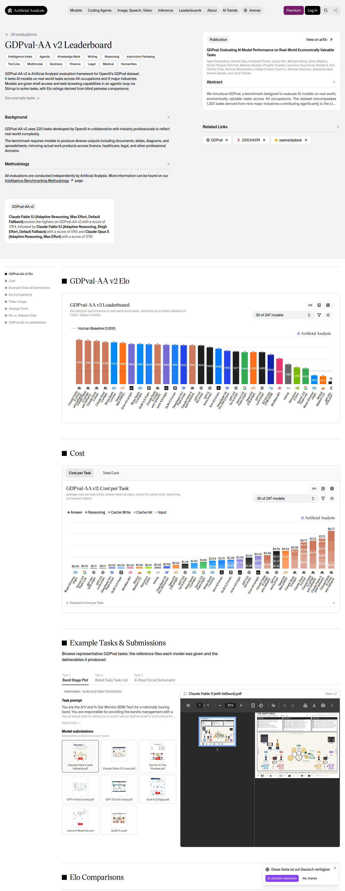
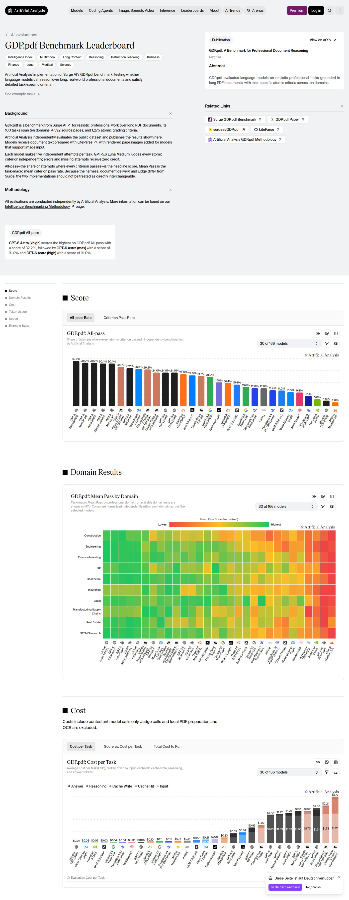

SUPRABENCH · CURATION RUN · 2026-09-17-b · batch 2 of 3
Dense frontier backfill from Artificial Analysis
The ranking audit of 16–17 September 2026 showed that SupraBench under-measured the current frontier: Claude Fable 5.1 had five benchmark cells in production while its publisher-run results covered fifteen, results of one release were scattered over several configuration names, and the benchmarks on which every frontier release is measured today had been deferred run after run. This batch inserts cells that Artificial Analysis publishes and production lacked. Nothing is replaced or removed; existing cells — whatever their source — are left untouched.
Values were read from the result matrix embedded in the publisher's pages (payload self.__next_f, arrays models and initialModels) at 2026-09-17T16:42:42.422Z and rounded to the precision the publisher displays (0.1 %, whole Elo points, 0.1 index points). The screenshots below document page, benchmark version and chart at read time.
Summary
- 148 score rows inserted across 5 sources (111 belong to the publisher's 30 default frontier models).
- New benchmarks in this batch: GDPval-AA v2, Terminal-Bench 4.0, GDP.pdf.
- New models in this batch: none.
Benchmarks admitted
| Benchmark | Scale stored | Rating (relevance / contamination resistance / discriminability / reproducibility / difficulty) | Why |
|---|---|---|---|
| GDPval-AA v2 | 500 … 2500 | 5 / 3 / 4 / 2 / 4 | Artificial Analysis' agentic run of OpenAI's GDPval: economically valuable real-world tasks across 44 occupations and nine industries, completed with shell and browser access; outputs are compared blind and pairwise by a rotating panel of frontier-model judges, Elo anchored to human experts at 1000. Stored as Elo on the publisher's index scale (500–2500). |
| Terminal-Bench 4.0 | 0 … 1000 | 5 / 3 / 5 / 4 / 5 | Terminal-Bench 4.0 (Laude Institute, Stanford and contributors) as run by Artificial Analysis: 66 hard terminal tasks across software, machine learning, science, operations, security, hardware and media in a real terminal with verification suites; pass@1 averaged over three repeats. Successor to Terminal-Bench 2.1 with recalibrated limits and eight saturated or flawed tasks removed. |
| GDP.pdf | 0 … 1000 | 5 / 4 / 5 / 3 / 5 | GDP.pdf (Surge AI) as run by Artificial Analysis: long-context reasoning over 100 real professional PDF documents (4,592 pages, ten domains) graded against 1,275 expert-written atomic criteria. The headline score is the share of tasks on which every criterion passes. |
All six benchmarks admitted in this run are components of the Artificial Analysis Intelligence Index v4.3 and are run by the publisher on every current frontier release. Private or judge-graded sets are admitted under the same rule that admitted APEX-Agents-AA, AA-LCR and AutomationBench-AA; the uncertainty is priced into the reproducibility rating (2–3) instead of a deferral.
Source evidence
https://artificialanalysis.ai/evaluations/terminalbench-4-0

https://artificialanalysis.ai/evaluations/scicode

https://artificialanalysis.ai/evaluations/gdpval-aa

https://artificialanalysis.ai/evaluations/gdp-pdf

https://artificialanalysis.ai/evaluations/automationbench-aa

Inserted rows
Terminal-Bench 4.0 — 48 rows
| Production model | Publisher row | Publisher value | Stored raw score |
|---|---|---|---|
| GPT-6 Astra (xhigh) | GPT-6 Astra (xhigh) | 0.595959595959596 | 596 |
| GPT-6 Astra (max) | GPT-6 Astra (max) | 0.590909090909091 | 591 |
| Claude Fable 5.1 (xhigh with fallback) | Claude Fable 5.1 (xhigh with fallback) | 0.55050505050505 | 551 |
| GPT-6 Astra (high) | GPT-6 Astra (high) | 0.54040404040404 | 540 |
| Claude Fable 5.1 (max with fallback) | Claude Fable 5.1 (max with fallback) | 0.52020202020202 | 520 |
| Claude Fable 5.1 (high with fallback) | Claude Fable 5.1 (high with fallback) | 0.52020202020202 | 520 |
| GPT-6 Astra (medium) | GPT-6 Astra (medium) | 0.494949494949495 | 495 |
| Claude Opus 5 (Max) | Claude Opus 5 (max) | 0.48989898989899 | 490 |
| Claude Opus 5 (xhigh) | Claude Opus 5 (xhigh) | 0.464646464646465 | 465 |
| Claude Opus 5 (High) | Claude Opus 5 (high) | 0.45959595959596 | 460 |
| Claude Fable 5.1 (medium with fallback) | Claude Fable 5.1 (medium with fallback) | 0.44949494949495 | 449 |
| GLM-5.3 (max) | GLM-5.3 (max) | 0.419191919191919 | 419 |
| GPT-5.6 Sol (max) | GPT-5.6 Sol (max) | 0.398989898989899 | 399 |
| GPT-5.6 Terra (max) | GPT-5.6 Terra (max) | 0.353535353535354 | 354 |
| Muse Spark 1.3 (max) | Muse Spark 1.3 (max) | 0.333333333333333 | 333 |
| GLM-5.3-Flash (max) | GLM-5.3-Flash | 0.328282828282828 | 328 |
| DeepSeek V4.1 Flash (max) | DeepSeek V4.1 Flash (max) | 0.267676767676768 | 268 |
| GPT-5.6 Sol (xhigh) | GPT-5.6 Sol (xhigh) | 0.247474747474747 | 247 |
| Grok 4.6 (high) | Grok 4.6 (high) | 0.212121212121212 | 212 |
| GPT-5.6 Sol (high) | GPT-5.6 Sol (high) | 0.207070707070707 | 207 |
| Gemini 3.8 Flash (medium) | Gemini 3.8 Flash (medium) | 0.196969696969697 | 197 |
| Gemini 3.8 Flash (high) | Gemini 3.8 Flash (high) | 0.196969696969697 | 197 |
| Grok 4.6 (xhigh) | Grok 4.6 (xhigh) | 0.171717171717172 | 172 |
| Muse Spark 1.3 (xhigh) | Muse Spark 1.3 (xhigh) | 0.166666666666667 | 167 |
| GPT-5.6 Sol (medium) | GPT-5.6 Sol (medium) | 0.146464646464646 | 146 |
| Claude Sonnet 5 (Max) | Claude Sonnet 5 (max) | 0.141414141414141 | 141 |
| DeepSeek V4 Pro 0813 (max) | DeepSeek V4 Pro 0813 (max) | 0.141414141414141 | 141 |
| Grok 4.6 (medium) | Grok 4.6 (medium) | 0.131313131313131 | 131 |
| Kimi K3 (max) | Kimi K3 (max) | 0.126262626262626 | 126 |
| GPT-5.6 Luna (max) | GPT-5.6 Luna (max) | 0.116161616161616 | 116 |
| Qwen3.8 2.4T A95B (max) | Qwen3.8 2.4T A95B | 0.111111111111111 | 111 |
| GPT-5.6 Terra (xhigh) | GPT-5.6 Terra (xhigh) | 0.101010101010101 | 101 |
| Gemini 3.8 Flash (low) | Gemini 3.8 Flash (low) | 0.101010101010101 | 101 |
| Qwen3.8 27B (xhigh) | Qwen3.8 27B (xhigh) | 0.0555555555555556 | 56 |
| Gemini 3.1 Pro Preview | Gemini 3.1 Pro Preview | 0.0404040404040404 | 40 |
| GPT-5.6 Luna (xhigh) | GPT-5.6 Luna (xhigh) | 0.0353535353535354 | 35 |
| MiniMax-M3 | MiniMax-M3 | 0.0202020202020202 | 20 |
| K2 Horizon 375B A23B | K2 Horizon 375B A23B | 0.0151515151515152 | 15 |
| Gemini 3.5 Flash-Lite | Gemini 3.5 Flash-Lite | 0.0101010101010101 | 10 |
| Inkling (xhigh) | Inkling | 0.0101010101010101 | 10 |
| Muse Glimmer (high) | Muse Glimmer (high) | 0.00505050505050505 | 5 |
| NVIDIA Nemotron 3 Ultra | Nemotron 3 Ultra | 0.00505050505050505 | 5 |
| gpt-oss-20B (high) | gpt-oss-20b (high) | 0 | 0 |
| Mistral Small 4 | Mistral Small 4 | 0 | 0 |
| Claude 4.5 Haiku | Claude 4.5 Haiku | 0 | 0 |
| Gemma 4 31B | Gemma 4 31B | 0 | 0 |
| Mistral Medium 3.5 | Mistral Medium 3.5 | 0 | 0 |
| gpt-oss-120B (high) | gpt-oss-120b (high) | 0 | 0 |
SciCode — 29 rows
| Production model | Publisher row | Publisher value | Stored raw score |
|---|---|---|---|
| GPT-5.6 Sol (high) | GPT-5.6 Sol (high) | 0.577546296296296 | 578 |
| GPT-5.6 Sol (medium) | GPT-5.6 Sol (medium) | 0.574074074074074 | 574 |
| GPT-5.6 Sol (xhigh) | GPT-5.6 Sol (xhigh) | 0.570601851851852 | 571 |
| Claude Fable 5.1 (medium with fallback) | Claude Fable 5.1 (medium with fallback) | 0.563657407407407 | 564 |
| Grok 4.6 (medium) | Grok 4.6 (medium) | 0.559027777777778 | 559 |
| Claude Opus 5 (xhigh) | Claude Opus 5 (xhigh) | 0.556712962962963 | 557 |
| GPT-6 Astra (xhigh) | GPT-6 Astra (xhigh) | 0.556712962962963 | 557 |
| Claude Opus 5 (High) | Claude Opus 5 (high) | 0.554398148148148 | 554 |
| GPT-6 Astra (high) | GPT-6 Astra (high) | 0.554398148148148 | 554 |
| Gemini 3.8 Flash (medium) | Gemini 3.8 Flash (medium) | 0.550925925925926 | 551 |
| Gemini 3.8 Flash (low) | Gemini 3.8 Flash (low) | 0.549768518518518 | 550 |
| Claude Sonnet 5 (Max) | Claude Sonnet 5 (max) | 0.542824074074074 | 543 |
| GPT-6 Astra (medium) | GPT-6 Astra (medium) | 0.541666666666667 | 542 |
| Grok 4.6 (xhigh) | Grok 4.6 (xhigh) | 0.530092592592593 | 530 |
| GPT-5.6 Terra (xhigh) | GPT-5.6 Terra (xhigh) | 0.523148148148148 | 523 |
| DeepSeek V4.1 Flash (max) | DeepSeek V4.1 Flash (max) | 0.518518518518518 | 519 |
| DeepSeek V4 Pro 0813 (max) | DeepSeek V4 Pro 0813 (max) | 0.510416666666667 | 510 |
| GPT-5.6 Luna (xhigh) | GPT-5.6 Luna (xhigh) | 0.50462962962963 | 505 |
| Inkling (xhigh) | Inkling | 0.469907407407407 | 470 |
| Gemma 4 31B | Gemma 4 31B | 0.454861111111111 | 455 |
| Muse Glimmer (high) | Muse Glimmer (high) | 0.449074074074074 | 449 |
| K2 Horizon 375B A23B | K2 Horizon 375B A23B | 0.429398148148148 | 429 |
| Claude 4.5 Haiku | Claude 4.5 Haiku | 0.422453703703704 | 422 |
| Gemini 3.5 Flash-Lite | Gemini 3.5 Flash-Lite | 0.413194444444444 | 413 |
| NVIDIA Nemotron 3 Ultra | Nemotron 3 Ultra | 0.402777777777778 | 403 |
| Mistral Medium 3.5 | Mistral Medium 3.5 | 0.40162037037037 | 402 |
| gpt-oss-20B (high) | gpt-oss-20b (high) | 0.388888888888889 | 389 |
| Mistral Small 4 | Mistral Small 4 | 0.387731481481481 | 388 |
| gpt-oss-120B (high) | gpt-oss-120b (high) | 0.340277777777778 | 340 |
GDPval-AA v2 — 28 rows
| Production model | Publisher row | Publisher value | Stored raw score |
|---|---|---|---|
| Claude Fable 5.1 (max with fallback) | Claude Fable 5.1 (max with fallback) | 1763.64 | 1764 |
| Claude Fable 5.1 (xhigh with fallback) | Claude Fable 5.1 (xhigh with fallback) | 1745.29 | 1745 |
| Claude Opus 5 (Max) | Claude Opus 5 (max) | 1735.09 | 1735 |
| Muse Spark 1.3 (max) | Muse Spark 1.3 (max) | 1703.34 | 1703 |
| GLM-5.3-Flash (max) | GLM-5.3-Flash | 1654.95 | 1655 |
| Claude Fable 5.1 (high with fallback) | Claude Fable 5.1 (high with fallback) | 1649.77 | 1650 |
| Grok 4.6 (high) | Grok 4.6 (high) | 1642.96 | 1643 |
| GLM-5.3 (max) | GLM-5.3 (max) | 1641.18 | 1641 |
| DeepSeek V4.1 Flash (max) | DeepSeek V4.1 Flash (max) | 1632.06 | 1632 |
| GPT-5.6 Sol (max) | GPT-5.6 Sol (max) | 1624.11 | 1624 |
| GPT-6 Astra (max) | GPT-6 Astra (max) | 1580.2 | 1580 |
| GPT-6 Astra (xhigh) | GPT-6 Astra (xhigh) | 1555.23 | 1555 |
| Kimi K3 (max) | Kimi K3 (max) | 1547.63 | 1548 |
| GPT-6 Astra (high) | GPT-6 Astra (high) | 1529.7 | 1530 |
| GPT-6 Astra (medium) | GPT-6 Astra (medium) | 1500.67 | 1501 |
| DeepSeek V4 Pro 0813 (max) | DeepSeek V4 Pro 0813 (max) | 1493.31 | 1493 |
| GPT-5.6 Terra (max) | GPT-5.6 Terra (max) | 1476.96 | 1477 |
| Gemini 3.8 Flash (high) | Gemini 3.8 Flash (high) | 1463.81 | 1464 |
| Qwen3.8 27B (xhigh) | Qwen3.8 27B (xhigh) | 1463.25 | 1463 |
| GPT-5.6 Luna (max) | GPT-5.6 Luna (max) | 1459.92 | 1460 |
| K2 Horizon 375B A23B | K2 Horizon 375B A23B | 1400 | 1400 |
| MiniMax-M3 | MiniMax-M3 | 1303.96 | 1304 |
| Inkling (xhigh) | Inkling | 1165.19 | 1165 |
| NVIDIA Nemotron 3 Ultra | Nemotron 3 Ultra | 1090.88 | 1091 |
| Gemini 3.5 Flash-Lite | Gemini 3.5 Flash-Lite | 1063.25 | 1063 |
| Muse Glimmer (high) | Muse Glimmer (high) | 892.72 | 893 |
| Mistral Medium 3.5 | Mistral Medium 3.5 | 875.14 | 875 |
| gpt-oss-120B (high) | gpt-oss-120b (high) | 744.74 | 745 |
GDP.pdf — 28 rows
| Production model | Publisher row | Publisher value | Stored raw score |
|---|---|---|---|
| GPT-6 Astra (xhigh) | GPT-6 Astra (xhigh) | 0.322 | 322 |
| GPT-6 Astra (max) | GPT-6 Astra (max) | 0.31 | 310 |
| GPT-6 Astra (high) | GPT-6 Astra (high) | 0.31 | 310 |
| GPT-6 Astra (medium) | GPT-6 Astra (medium) | 0.304 | 304 |
| GPT-5.6 Sol (max) | GPT-5.6 Sol (max) | 0.272 | 272 |
| Claude Fable 5.1 (high with fallback) | Claude Fable 5.1 (high with fallback) | 0.268 | 268 |
| Muse Spark 1.3 (max) | Muse Spark 1.3 (max) | 0.266 | 266 |
| Claude Fable 5.1 (max with fallback) | Claude Fable 5.1 (max with fallback) | 0.262 | 262 |
| Claude Fable 5.1 (xhigh with fallback) | Claude Fable 5.1 (xhigh with fallback) | 0.262 | 262 |
| GPT-5.6 Luna (max) | GPT-5.6 Luna (max) | 0.24 | 240 |
| GPT-5.6 Terra (max) | GPT-5.6 Terra (max) | 0.24 | 240 |
| Kimi K3 (max) | Kimi K3 (max) | 0.22 | 220 |
| Claude Opus 5 (Max) | Claude Opus 5 (max) | 0.216 | 216 |
| Gemini 3.8 Flash (high) | Gemini 3.8 Flash (high) | 0.21 | 210 |
| Grok 4.6 (high) | Grok 4.6 (high) | 0.17 | 170 |
| Qwen3.8 27B (xhigh) | Qwen3.8 27B (xhigh) | 0.164 | 164 |
| GLM-5.3-Flash (max) | GLM-5.3-Flash | 0.154 | 154 |
| Gemini 3.5 Flash-Lite | Gemini 3.5 Flash-Lite | 0.136 | 136 |
| Inkling (xhigh) | Inkling | 0.128 | 128 |
| DeepSeek V4.1 Flash (max) | DeepSeek V4.1 Flash (max) | 0.128 | 128 |
| DeepSeek V4 Pro 0813 (max) | DeepSeek V4 Pro 0813 (max) | 0.114 | 114 |
| GLM-5.3 (max) | GLM-5.3 (max) | 0.112 | 112 |
| Muse Glimmer (high) | Muse Glimmer (high) | 0.1 | 100 |
| MiniMax-M3 | MiniMax-M3 | 0.098 | 98 |
| K2 Horizon 375B A23B | K2 Horizon 375B A23B | 0.074 | 74 |
| NVIDIA Nemotron 3 Ultra | Nemotron 3 Ultra | 0.05 | 50 |
| gpt-oss-120B (high) | gpt-oss-120b (high) | 0.04 | 40 |
| Mistral Medium 3.5 | Mistral Medium 3.5 | 0.028 | 28 |
AutomationBench-AA — 15 rows
| Production model | Publisher row | Publisher value | Stored raw score |
|---|---|---|---|
| Muse Spark 1.3 (max) | Muse Spark 1.3 (max) | 0.5785343786538614 | 579 |
| Claude Fable 5.1 (xhigh with fallback) | Claude Fable 5.1 (xhigh with fallback) | 0.57772425084896 | 578 |
| DeepSeek V4 Pro 0813 (max) | DeepSeek V4 Pro 0813 (max) | 0.5671165546344002 | 567 |
| Claude Opus 5 (Max) | Claude Opus 5 (max) | 0.565735557649325 | 566 |
| Claude Fable 5.1 (high with fallback) | Claude Fable 5.1 (high with fallback) | 0.5532309746463979 | 553 |
| GPT-5.6 Luna (max) | GPT-5.6 Luna (max) | 0.5020861763756194 | 502 |
| Qwen3.8 27B (xhigh) | Qwen3.8 27B (xhigh) | 0.48242443682241926 | 482 |
| K2 Horizon 375B A23B | K2 Horizon 375B A23B | 0.3720802754388014 | 372 |
| Gemini 3.5 Flash-Lite | Gemini 3.5 Flash-Lite | 0.25011270511840955 | 250 |
| MiniMax-M3 | MiniMax-M3 | 0.21251257600749407 | 213 |
| Muse Glimmer (high) | Muse Glimmer (high) | 0.06831776269647931 | 68 |
| Mistral Medium 3.5 | Mistral Medium 3.5 | 0.06299648656993127 | 63 |
| Inkling (xhigh) | Inkling | 0.04984889684475201 | 50 |
| NVIDIA Nemotron 3 Ultra | Nemotron 3 Ultra | 0.02986349541593992 | 30 |
| gpt-oss-120B (high) | gpt-oss-120b (high) | 0.0019906990691605595 | 2 |
Validation
Generated by scripts/curation-aa-backfill.mjs; validated with npm run curation:validate, dry-run against upbeat-clam-790, applied once, D1 mirror drift checked afterwards. See the commit that publishes this report for the recorded results.